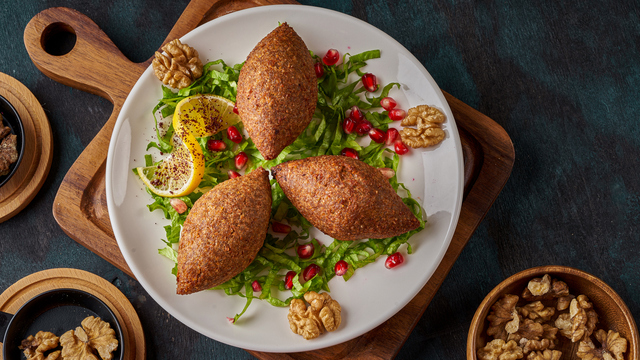

Home
Icli Kofte

Icli Kofte
Turkish stuffed meatballs, known as içli köfte, are a cherished dish that
showcases the artistry of Turkish cuisine. These oval-shaped delights
feature a delicate shell made from a mix of fine bulgur, semolina, and
sometimes mashed potatoes or flour, forming a dough-like texture. The
shell encases a savory filling of spiced ground beef or lamb, sautéed
onions, and crushed walnuts or pine nuts. The preparation requires
meticulous care, as the outer layer must be thin yet sturdy enough to hold
the filling, creating a perfect balance of textures.
Içli köfte can be prepared in two popular ways: deep-fried for a crispy,
golden crust or boiled for a softer, melt-in-the-mouth experience.
Regardless of the cooking method, the dish is often served with a squeeze
of fresh lemon and a side of refreshing salads or yogurt-based dips. Its
preparation, often a communal effort, carries cultural significance,
particularly in southeastern Turkey, where it is a centerpiece at family
gatherings and celebrations. İçli köfte embodies the blend of tradition,
skill, and hospitality that defines Turkish cuisine, offering a bite-sized
culinary masterpiece with every serving.
Ingredients
Shell
- 2 cups fine bulgur (köftelik bulgur)
- 1 cup semolina
- 1 cup hot water (to soften bulgur)
- 1/2 cup flour
- 1 egg (optional, for binding)
- Salt and black pepper (to taste)
Filling
- 250g (1/2 lb) ground beef or lamb
- 1 medium onion, finely chopped
- 1 medium onion, finely chopped
- 1 teaspoon paprika
- 1 teaspoon ground cumin
- Salt and black pepper (to taste)
Step by Step Preparation
-
To prepare içli köfte, start by making the filling. Sauté the chopped
onion in a pan until soft, then add the ground meat and cook it until
browned. Mix in paprika, cumin, salt, and black pepper, and let the
mixture cool.
-
For the shell, combine fine bulgur and semolina in a bowl. Pour hot
water over the mixture and let it rest for 10-15 minutes to soften. Once
softened, add flour, salt, and black pepper, and knead the mixture into
a firm dough that can hold its shape.
-
Next, shape the köfte by taking a small piece of the dough and rolling
it into a ball, about the size of a walnut. Press your thumb into the
center of the ball to form a hollow cup, then fill it with 1-2 teaspoons
of the meat mixture. Carefully seal the edges and shape the filled dough
into an oval.
-
To cook, you can either fry or boil the köfte. For frying, heat oil in a
pan and fry the köfte until golden and crispy. For boiling, cook them in
salted boiling water for 5-7 minutes, or until they float to the
surface. Serve the içli köfte hot and enjoy its delicious flavors!